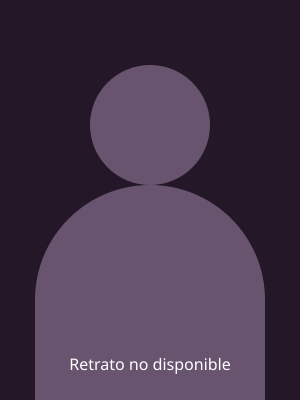

Que decida la Entidad.
Elige tus personajes. Deja que la Entidad decida tu build.
¿Con qué killer jugarás?
Gira entre tus killers seleccionados. Cada uno tiene la misma probabilidad.
Elige tus killers

Añade tus killers desde el catálogo para comenzar.
Cada modo tiene su propia selección. Por ahora solo están activas las perks generales del modo actual.
Tu próxima build
4 perks distintas · todas con la misma probabilidadBloquea una perk para conservarla al girar. Nombres en español latino. Puedes buscar también por el nombre en inglés.
Configurar mis personajes y perks
Cada visitante empieza sin personajes seleccionados. Elige los que tienes y añade los que vayas comprando desde el catálogo de abajo. Activa sus perks cuando estén disponibles en el personaje con el que juegas; el prestigio 1 las desbloquea para los demás. Tu configuración se guarda en este navegador.
Añadir personajes que compre
Elige un personaje y sus tres perks se añadirán juntas, con nombres e imágenes. Los personajes del catálogo solo entran en el sorteo cuando los añades.